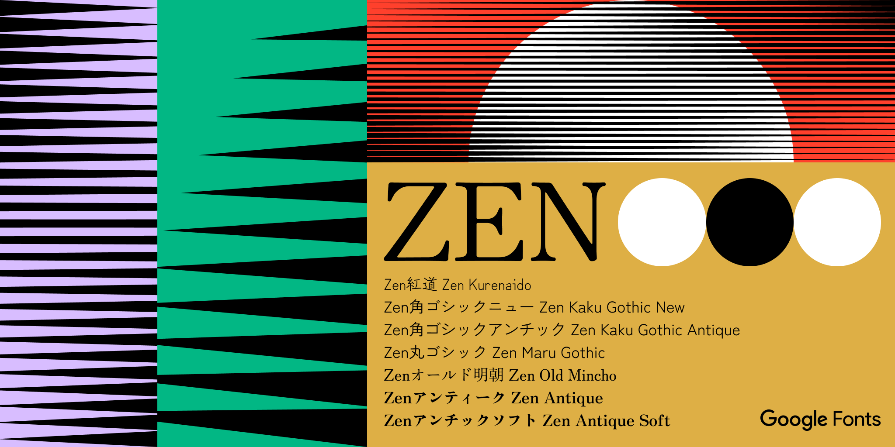

Zen Maru Gothic is a rounded san serif family that gives a soft and natural impression due to the deep rounds in the corners. Because of this unique soft impression the thin weight is also easy to use in any scenes. Cute and fashionable, soft and easy for any communications.
To contribute to the project, visit https://github.com/googlefonts/zen-marugothic
Zen Maru Gothicは、角の深い丸みによってソフトでナチュラルな印象を与える丸ゴシック体です。この特有のソフトな印象により、細いウエイトはどのようなシーンにも似合います。キュートでオシャレなこのフォントは、様々な場面で柔らかくふんわりとしたコミュニケーションに活用できます。
このプロジェクトに参加するには、こちらのリンクへ https://github.com/googlefonts/zen-marugothic
In 2019, Google Fonts started an ambitious project to expand its font library with a variety of typeface designs for Japanese. At that point Google Fonts had fewer than 10 Japanese families, most of which were basic Mincho (serif) and gothic (sans) designs. Since then the collection of Japanese fonts within the library has grown, now with 38 font families from 18 designers, in a variety of styles – from formal text types to fun display fonts. All these Japanese fonts are now live on Google Fonts for anyone to test out and use in any project.
As part of this larger effort to expand Japanese offerings, Google Fonts collaborated with type designer Yoshimichi Ohira to open his prestigious collection of Zen Fonts typefaces to the public. With 23 Japanese and three Latin fonts in various styles of mincho (serif), gothic (sans serif), maru (rounded), and display styles, the Zen Fonts collection is now the largest set of Japanese fonts in Google Fonts’ expansive library, and is also available in Adobe Fonts. Check out The Story of Zen Fonts - interview with Yoshimichi Ohira to learn more.
To learn more, read:
Say Hello to our big new Japanese collection with Zen Fonts (English)
The Story of Zen Fonts - interview with Yoshimichi Ohira (English)
Zenフォント: 新しい日本語フォントコレクションの登場 - 日本語フォントの複雑な美しさについて - (Japanese)
Zenフォントのおはなし：大平善道さんとのインタビュー (Japanese)